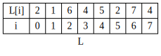
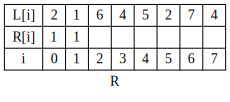
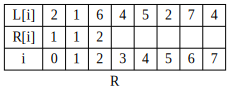
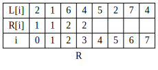
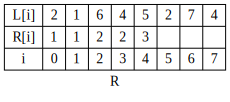
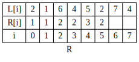

<!DOCTYPE html>
<html lang="zh-Hans">

<head>
  <!-- hexo-inject:begin --><!-- hexo-inject:end --><meta name="generator" content="Hexo 3.8.0">
  <!--[if lt IE 9]>
        <style>body {display: none; background: none !important} </style>
        <meta http-equiv="Refresh" Content="0; url=//outdatedbrowser.com/" />
    <![endif]-->

  <meta charset="utf-8">
  <meta http-equiv="X-UA-Compatible" content="IE=edge, chrome=1">
  <meta name="viewport" content="width=device-width, initial-scale=1, maximum-scale=1, user-scalable=no">
  <meta name="format-detection" content="telephone=no">
  <meta name="author" content="whyming">

  <meta name="description" content="最长递增子序列问题：已知一个序列，包含正数、负数和0，递增子序列指的是，子序列的顺序和已知序列相同，但是不要连续，同时要求后面的数大于前面的数。求最长的子序列的长度   例：已知：&amp;lt;2,1,3,9,4,7,5,2&amp;gt;   最长递增子序列为：&amp;lt;1,3,4,7&amp;gt;或者&amp;lt;1,3,4,5&amp;gt;   答案为 4">
  <meta name="keywords" content="go,算法">
  <meta property="og:type" content="article">
  <meta property="og:title" content="算法200题训练（一）最长递增子序列">
  <meta property="og:url" content="http://yoursite.com/2018/06/27/算法200题训练（一）最长递增子序列/index.html">
  <meta property="og:site_name" content="Whyming&#39;s Blog">
  <meta property="og:description" content="最长递增子序列问题：已知一个序列，包含正数、负数和0，递增子序列指的是，子序列的顺序和已知序列相同，但是不要连续，同时要求后面的数大于前面的数。求最长的子序列的长度   例：已知：&amp;lt;2,1,3,9,4,7,5,2&amp;gt;   最长递增子序列为：&amp;lt;1,3,4,7&amp;gt;或者&amp;lt;1,3,4,5&amp;gt;   答案为 4">
  <meta property="og:locale" content="zh-Hans">
  <meta property="og:image" content="http://yoursite.com/2018/06/27/算法200题训练（一）最长递增子序列/origin_list.svg">
  <meta property="og:image" content="http://yoursite.com/2018/06/27/算法200题训练（一）最长递增子序列/R0.svg">
  <meta property="og:image" content="http://yoursite.com/2018/06/27/算法200题训练（一）最长递增子序列/R1.svg">
  <meta property="og:image" content="http://yoursite.com/2018/06/27/算法200题训练（一）最长递增子序列/R2.svg">
  <meta property="og:image" content="http://yoursite.com/2018/06/27/算法200题训练（一）最长递增子序列/R3.svg">
  <meta property="og:image" content="http://yoursite.com/2018/06/27/算法200题训练（一）最长递增子序列/R4.svg">
  <meta property="og:image" content="http://yoursite.com/2018/06/27/算法200题训练（一）最长递增子序列/R5.svg">
  <meta property="og:image" content="http://yoursite.com/2018/06/27/算法200题训练（一）最长递增子序列/R6.svg">
  <meta property="og:image" content="http://yoursite.com/2018/06/27/算法200题训练（一）最长递增子序列/R6.svg">
  <meta property="og:updated_time" content="2018-07-02T10:02:48.000Z">
  <meta name="twitter:card" content="summary">
  <meta name="twitter:title" content="算法200题训练（一）最长递增子序列">
  <meta name="twitter:description" content="最长递增子序列问题：已知一个序列，包含正数、负数和0，递增子序列指的是，子序列的顺序和已知序列相同，但是不要连续，同时要求后面的数大于前面的数。求最长的子序列的长度   例：已知：&amp;lt;2,1,3,9,4,7,5,2&amp;gt;   最长递增子序列为：&amp;lt;1,3,4,7&amp;gt;或者&amp;lt;1,3,4,5&amp;gt;   答案为 4">
  <meta name="twitter:image" content="http://yoursite.com/2018/06/27/算法200题训练（一）最长递增子序列/origin_list.svg">

  <link rel="apple-touch-icon" href="/apple-touch-icon.png">

  <link rel="alternate" href="/atom.xml" title="Whyming&#39;s Blog" type="application/atom+xml">

  <link rel="shortcut icon" href="/favicon.png">

  <link href="//cdn.bootcss.com/animate.css/3.5.1/animate.min.css" rel="stylesheet">

  <link href="//cdn.bootcss.com/fancybox/2.1.5/jquery.fancybox.min.css" rel="stylesheet">

  <script src="//cdn.bootcss.com/pace/1.0.2/pace.min.js"></script>
  <link href="//cdn.bootcss.com/pace/1.0.2/themes/blue/pace-theme-minimal.css" rel="stylesheet">

  <link rel="stylesheet" href="/css/style.css">

  <link href="//cdn.bootcss.com/font-awesome/4.6.3/css/font-awesome.min.css" rel="stylesheet">

  <title>算法200题训练（一）最长递增子序列 | Whyming&#39;s Blog</title>

  <script src="//cdn.bootcss.com/jquery/2.2.4/jquery.min.js"></script>
  <script src="//cdn.bootcss.com/clipboard.js/1.5.10/clipboard.min.js"></script>

  <script>
    var yiliaConfig = {
      fancybox: true,
      animate: true,
      isHome: false,
      isPost: true,
      isArchive: false,
      isTag: false,
      isCategory: false,
      fancybox_js: "//cdn.bootcss.com/fancybox/2.1.5/jquery.fancybox.min.js",
      scrollreveal: "//cdn.bootcss.com/scrollReveal.js/3.1.4/scrollreveal.min.js",
      search: false
    }

  </script>

  <script>
    yiliaConfig.jquery_ui = [false];

  </script>

  <script>
    yiliaConfig.rootUrl = "\/";

  </script><!-- hexo-inject:begin --><!-- hexo-inject:end -->

</head>

</html>

<body>
  <!-- hexo-inject:begin --><!-- hexo-inject:end --><div id="container">
    <div class="left-col">
      <div class="overlay"></div>
      <div class="intrude-less">
        <header id="header" class="inner">
          <a href="/" class="profilepic">
            
          </a>
          <hgroup>
            <h1 class="header-author">
              <a href="/">whyming</a>
            </h1>
          </hgroup>

          <p class="header-subtitle">坚持 积累 总结 升级</p>

          <div id="switch-btn" class="switch-btn">
            <div class="icon">
              <div class="icon-ctn">
                <div class="icon-wrap icon-house" data-idx="0">
                  <div class="birdhouse"></div>
                  <div class="birdhouse_holes"></div>
                </div>
                <div class="icon-wrap icon-ribbon hide" data-idx="1">
                  <div class="ribbon"></div>
                </div>

                <div class="icon-wrap icon-link hide" data-idx="2">
                  <div class="loopback_l"></div>
                  <div class="loopback_r"></div>
                </div>

                <div class="icon-wrap icon-me hide" data-idx="3">
                  <div class="user"></div>
                  <div class="shoulder"></div>
                </div>

              </div>

            </div>
            <div class="tips-box hide">
              <div class="tips-arrow"></div>
              <ul class="tips-inner">
                <li>菜单</li>
                <li>标签</li>

                <li>友情链接</li>

                <li>关于我</li>

              </ul>
            </div>
          </div>

          <div id="switch-area" class="switch-area">
            <div class="switch-wrap">
              <section class="switch-part switch-part1">
                <nav class="header-menu">
                  <ul>

                    <li>
                      <a href="/">主页</a>
                    </li>

                    <li>
                      <a href="/archives/">所有文章</a>
                    </li>

                    <li>
                      <a href="/tags/">标签云</a>
                    </li>

                    <li>
                      <a href="/about/">关于我</a>
                    </li>

                  </ul>
                </nav>
                <nav class="header-nav">
                  <ul class="social">

                    <a class="fa Email" href="mailto:whyming@163.com" title="Email"></a>

                    <a class="fa GitHub" href="https://github.com/whyming" title="GitHub"></a>

                  </ul>
                </nav>
              </section>

              <section class="switch-part switch-part2">
                <div class="widget tagcloud" id="js-tagcloud">
                  <ul class="tag-list">
                    <li class="tag-list-item">
                      <a class="tag-list-link" href="/tags/Nsq/">Nsq</a>
                    </li>
                    <li class="tag-list-item">
                      <a class="tag-list-link" href="/tags/go/">go</a>
                    </li>
                    <li class="tag-list-item">
                      <a class="tag-list-link" href="/tags/二叉树/">二叉树</a>
                    </li>
                    <li class="tag-list-item">
                      <a class="tag-list-link" href="/tags/平衡二叉树/">平衡二叉树</a>
                    </li>
                    <li class="tag-list-item">
                      <a class="tag-list-link" href="/tags/日常/">日常</a>
                    </li>
                    <li class="tag-list-item">
                      <a class="tag-list-link" href="/tags/源码学习/">源码学习</a>
                    </li>
                    <li class="tag-list-item">
                      <a class="tag-list-link" href="/tags/源码阅读/">源码阅读</a>
                    </li>
                    <li class="tag-list-item">
                      <a class="tag-list-link" href="/tags/算法/">算法</a>
                    </li>
                    <li class="tag-list-item">
                      <a class="tag-list-link" href="/tags/记录/">记录</a>
                    </li>
                  </ul>
                </div>
              </section>

              <section class="switch-part switch-part3">
                <div id="js-friends">

                  <a class="main-nav-link switch-friends-link" href="https://hexo.io">Hexo</a>

                  <a class="main-nav-link switch-friends-link" href="https://pages.github.com/">GitHub</a>

                  <a class="main-nav-link switch-friends-link" href="http://moxfive.xyz/">MOxFIVE</a>

                </div>
              </section>

              <section class="switch-part switch-part4">

                <div id="js-aboutme">专注于前端</div>
              </section>

            </div>
          </div>
        </header>
      </div>

    </div>
    <div class="mid-col">
      <nav id="mobile-nav">
        <div class="overlay">
          <div class="slider-trigger"></div>
          <h1 class="header-author js-mobile-header hide">
            <a href="/" title="回到主页">whyming</a>
          </h1>
        </div>
        <div class="intrude-less">
          <header id="header" class="inner">
            <a href="/" class="profilepic">
              
            </a>
            <hgroup>
              <h1 class="header-author">
                <a href="/" title="回到主页">whyming</a>
              </h1>
            </hgroup>

            <p class="header-subtitle">坚持 积累 总结 升级</p>

            <nav class="header-menu">
              <ul>

                <li>
                  <a href="/">主页</a>
                </li>

                <li>
                  <a href="/archives/">所有文章</a>
                </li>

                <li>
                  <a href="/tags/">标签云</a>
                </li>

                <li>
                  <a href="/about/">关于我</a>
                </li>

                <div class="clearfix"></div>
              </ul>
            </nav>
            <nav class="header-nav">
              <ul class="social">

                <a class="fa Email" target="_blank" href="mailto:whyming@163.com" title="Email"></a>

                <a class="fa GitHub" target="_blank" href="https://github.com/whyming" title="GitHub"></a>

              </ul>
            </nav>
          </header>
        </div>
        <link class="menu-list" tags="标签" friends="友情链接" about="关于我">
      </nav>

      <div class="body-wrap">
        <article id="post-算法200题训练（一）最长递增子序列" class="article article-type-post" itemscope=""
                                                                                        itemprop="blogPost">

          <div class="article-meta">
            <a href="/2018/06/27/算法200题训练（一）最长递增子序列/" class="article-date">
              <time datetime="2018-06-27T06:27:21.000Z" itemprop="datePublished">2018-06-27</time>
            </a>

          </div>

          <div class="article-inner">

            <input type="hidden" class="isFancy">

            <header class="article-header">
              <h1 class="article-title" itemprop="name">
                算法200题训练（一）最长递增子序列
              </h1>

            </header>

            <div class="article-info article-info-post">

              <div class="article-tag tagcloud">
                <ul class="article-tag-list">
                  <li class="article-tag-list-item">
                    <a class="article-tag-list-link" href="/tags/go/">go</a>
                  </li>
                  <li class="article-tag-list-item">
                    <a class="article-tag-list-link" href="/tags/算法/">算法</a>
                  </li>
                </ul>
              </div>

              <div class="clearfix"></div>
            </div>

            <div class="article-entry" itemprop="articleBody">

              <p>最长递增子序列问题：已知一个序列，包含正数、负数和0，递增子序列指的是，子序列的顺序和已知序列相同，但是不要连续，同时要求后面的数大于前面的数。求最长的子序列的长度
                <br>例：已知：&lt;2,1,3,9,4,7,5,2&gt;
                <br>最长递增子序列为：&lt;1,3,4,7&gt;或者&lt;1,3,4,5&gt;
                <br>答案为 4
                <br>
                <a id="more"></a>
              </p>
              <h2 id="最长递增子序列问题">
                <a href="#最长递增子序列问题" class="headerlink" title="最长递增子序列问题"></a>最长递增子序列问题</h2>
              <h3 id="题目">
                <a href="#题目" class="headerlink" title="题目"></a>题目</h3>
              <p>已知一个序列，包含正数、负数和0，递增子序列指的是，子序列的顺序和已知序列相同，但是不要连续，同时要求后面的数大于前面的数。求最长的子序列的长度</p>
              <p>例：已知：
                <code>&lt;2,1,6,4,5,2,7,4&gt;</code>
              </p>
              <p>最长递增子序列为：
                <code>&lt;2,4,5,7&gt;</code>或者
                <code>&lt;1,4,5,7&gt;</code>
              </p>
              <p>答案为
                <code>4</code>
              </p>
              <h3 id="解法一：">
                <a href="#解法一：" class="headerlink" title="解法一："></a>解法一：</h3>
              <p>已知数组为L
                <br>设R[i]表示，必须以L[i]结尾的
                <strong>
                  <code>最长递增子序列</code>
                </strong>的长度</p>
              <p>R[i]计算过程就是求出结果的过程，只要用一个变量记录R中的最大值，就可以得到最终结果</p>
              <p>R的计算是这样的，首先R[0] = 1,因为只有一个数的长度为1</p>
              <p>然后R[i]的计算是这样的：用L[i]和L[0]到L[i-1]所有数进行比较，如果L[i]更大，那么记下这个数的下标,比如i=3的时候，L[3]=4;其中L[0]、L[1]都小于L[3],取出这些下标0、1，然后在R中查找对应的数值中最大的+1，即MAX(R[0],R[1])+1
                =&gt; 2,那么R[3] = 2. </p>
              <p>因为R[i]中记录了以L[i]结尾的
                <strong>
                  <code>最长递增子序列</code>
                </strong>长度，那么只要某个数大于L[i],那么必然存在一个长度为R[i]+1的
                <strong>
                  <code>最长递增子序列</code>
                </strong>，这个
                <strong>
                  <code>最长递增子序列</code>
                </strong>就是以L[i]结尾的那个序列再加上这个新的数。</p>
              <p>例：
                <br>
                
              </p>
              <p>i=0;R[0] = 1,因为必须以L[0]结尾的序列只有
                <2>,长度为1
                  <br>
                  
                </2>
              </p>
              <p>i=1;比较L[1]和L[0],没有找到比L[1]小的数，那么R[1] = 1,即以L[1]结尾的
                <strong>
                  <code>最长递增子序列</code>
                </strong>
                <br>
                
              </p>
              <p>i=2;用L[2]比较L[0]和L[1],6比1和2都大,然后取R[0]R[1]中最大的值+1，R[2] = Max(R[0],R[1])+1
                = 2
                <br>
                
              </p>
              <p>i=3;用L[3]比较L[0]~L[2],因为4&lt;6,所以只取0和1下标，R[3] = Max(R[0],R[1])+1 = 2
                <br>
                
              </p>
              <p>i=4; 用L[4]比较L[0]~L[3],因为L[4]=5&gt;L[0],5&gt;L[1],5&gt;[3],所以R[4] =
                Max(R[0],R[1],R[3])+1 = 3
                <br>
                
              </p>
              <p>i=5; 用L[5]比较L[0]~L[4], 因为L[5]=2,只有L[5]&gt;L[1], 所以R[5] = R[1] + 1 =
                2
                <br>
                
              </p>
              <p>i=6,用L[6]比较L[0]~L[5],因为L[6]比前面所有数都大，所以R[6] = Max(R[0]…R[5])+1 = 4
                <br>
                
              </p>
              <p>i=7;用L[7]比较L[0]~L[6],L[7]=4&gt;L[0],4&gt;L[1],4&gt;L[5],所以R[7] = Max(R[0],R[1],R[5])
                + 1 = 3
                <br>
                
              </p>
              <p>len = Max(R[0]…R[7]) = 4</p>
              <p>算法复杂度O(N^2),N*N第一个N来自于数组从头到尾的遍历，第二个N来自于每次需要和i以前的对比，取得最大的值+1
                <br>len可以每次更新R[i]的时候更新</p>
              <h3 id="go代码">
                <a href="#go代码" class="headerlink" title="go代码"></a>go代码</h3>
              <figure class="highlight go">
                <table>
                  <tr>
                    <td class="gutter">
                      <pre><span class="line">1</span><br><span class="line">2</span><br><span class="line">3</span><br><span class="line">4</span><br><span class="line">5</span><br><span class="line">6</span><br><span class="line">7</span><br><span class="line">8</span><br><span class="line">9</span><br><span class="line">10</span><br><span class="line">11</span><br><span class="line">12</span><br><span class="line">13</span><br><span class="line">14</span><br><span class="line">15</span><br><span class="line">16</span><br><span class="line">17</span><br><span class="line">18</span><br><span class="line">19</span><br><span class="line">20</span><br><span class="line">21</span><br><span class="line">22</span><br><span class="line">23</span><br><span class="line">24</span><br><span class="line">25</span><br><span class="line">26</span><br><span class="line">27</span><br></pre>
                    </td>
                    <td class="code">
                      <pre><span class="line"><span class="keyword">package</span> LIS</span><br><span class="line"></span><br><span class="line"><span class="comment">// Lis is Longest Increasing Subsequence</span></span><br><span class="line"><span class="function"><span class="keyword">func</span> <span class="title">Lis</span><span class="params">(s []<span class="keyword">int</span>)</span> <span class="params">(result <span class="keyword">int</span>)</span></span> &#123;</span><br><span class="line">	<span class="keyword">if</span> <span class="built_in">len</span>(s) &lt;= <span class="number">1</span> &#123;</span><br><span class="line">		<span class="keyword">return</span> <span class="built_in">len</span>(s)</span><br><span class="line">	&#125;</span><br><span class="line">	R := <span class="built_in">make</span>([]<span class="keyword">int</span>, <span class="built_in">len</span>(s))</span><br><span class="line">	R[<span class="number">0</span>] = <span class="number">1</span></span><br><span class="line">	result = <span class="number">0</span></span><br><span class="line">	<span class="keyword">for</span> i, item := <span class="keyword">range</span> s &#123;</span><br><span class="line">		<span class="keyword">for</span> j, tmp := <span class="keyword">range</span> s[:i] &#123;</span><br><span class="line">			<span class="keyword">if</span> tmp &lt; item &#123;</span><br><span class="line">				R[i] = max(R[i], R[j]+<span class="number">1</span>)</span><br><span class="line">			&#125;</span><br><span class="line">		&#125;</span><br><span class="line">		result = max(result, R[i])</span><br><span class="line">	&#125;</span><br><span class="line">	<span class="keyword">return</span></span><br><span class="line">&#125;</span><br><span class="line"></span><br><span class="line"><span class="function"><span class="keyword">func</span> <span class="title">max</span><span class="params">(a, b <span class="keyword">int</span>)</span> <span class="title">int</span></span> &#123;</span><br><span class="line">	<span class="keyword">if</span> a &gt; b &#123;</span><br><span class="line">		<span class="keyword">return</span> a</span><br><span class="line">	&#125;</span><br><span class="line">	<span class="keyword">return</span> b</span><br><span class="line">&#125;</span><br></pre>
                    </td>
                  </tr>
                </table>
              </figure>
              <p>UT</p>
              <figure class="highlight go">
                <table>
                  <tr>
                    <td class="gutter">
                      <pre><span class="line">1</span><br><span class="line">2</span><br><span class="line">3</span><br><span class="line">4</span><br><span class="line">5</span><br><span class="line">6</span><br><span class="line">7</span><br><span class="line">8</span><br><span class="line">9</span><br><span class="line">10</span><br><span class="line">11</span><br><span class="line">12</span><br><span class="line">13</span><br><span class="line">14</span><br><span class="line">15</span><br><span class="line">16</span><br><span class="line">17</span><br><span class="line">18</span><br><span class="line">19</span><br><span class="line">20</span><br><span class="line">21</span><br><span class="line">22</span><br><span class="line">23</span><br><span class="line">24</span><br><span class="line">25</span><br><span class="line">26</span><br></pre>
                    </td>
                    <td class="code">
                      <pre><span class="line"><span class="keyword">package</span> LIS</span><br><span class="line"></span><br><span class="line"><span class="keyword">import</span> <span class="string">"testing"</span></span><br><span class="line"></span><br><span class="line"><span class="function"><span class="keyword">func</span> <span class="title">TestLis</span><span class="params">(t *testing.T)</span></span> &#123;</span><br><span class="line">	<span class="keyword">type</span> args <span class="keyword">struct</span> &#123;</span><br><span class="line">		s []<span class="keyword">int</span></span><br><span class="line">	&#125;</span><br><span class="line">	tests := []<span class="keyword">struct</span> &#123;</span><br><span class="line">		name       <span class="keyword">string</span></span><br><span class="line">		args       args</span><br><span class="line">		wantResult <span class="keyword">int</span></span><br><span class="line">	&#125;&#123;</span><br><span class="line">		&#123;name: <span class="string">"empty"</span>, args: args&#123;s: []<span class="keyword">int</span>&#123;&#125;&#125;, wantResult: <span class="number">0</span>&#125;,</span><br><span class="line">		&#123;name: <span class="string">"onlyOne"</span>, args: args&#123;s: []<span class="keyword">int</span>&#123;<span class="number">2</span>&#125;&#125;, wantResult: <span class="number">1</span>&#125;,</span><br><span class="line">		&#123;name: <span class="string">"full"</span>, args: args&#123;s: []<span class="keyword">int</span>&#123;<span class="number">1</span>, <span class="number">2</span>, <span class="number">3</span>, <span class="number">4</span>, <span class="number">5</span>, <span class="number">6</span>&#125;&#125;, wantResult: <span class="number">6</span>&#125;,</span><br><span class="line">		&#123;name: <span class="string">"normal"</span>, args: args&#123;s: []<span class="keyword">int</span>&#123;<span class="number">2</span>, <span class="number">1</span>, <span class="number">6</span>, <span class="number">4</span>, <span class="number">5</span>, <span class="number">2</span>, <span class="number">7</span>, <span class="number">4</span>&#125;&#125;, wantResult: <span class="number">4</span>&#125;,</span><br><span class="line">	&#125;</span><br><span class="line">	<span class="keyword">for</span> _, tt := <span class="keyword">range</span> tests &#123;</span><br><span class="line">		t.Run(tt.name, <span class="function"><span class="keyword">func</span><span class="params">(t *testing.T)</span></span> &#123;</span><br><span class="line">			<span class="keyword">if</span> gotResult := Lis(tt.args.s); gotResult != tt.wantResult &#123;</span><br><span class="line">				t.Errorf(<span class="string">"Lis() = %v, want %v"</span>, gotResult, tt.wantResult)</span><br><span class="line">			&#125;</span><br><span class="line">		&#125;)</span><br><span class="line">	&#125;</span><br><span class="line">&#125;</span><br></pre>
                    </td>
                  </tr>
                </table>
              </figure>
              <h3 id="优化">
                <a href="#优化" class="headerlink" title="优化"></a>优化</h3>
              <p>可以优化的地方在于计算R[i]的时候，可以让L[i]和前面的数比较加速，因为如果R[j]和R[k] 都等于M，且j&lt;k,那么只要L[i]只要和L[j]比较就可以了，而且R[j]和R[k]只要保存一个就可以了。下期完整介绍算法复杂度为
                <strong>O(N*logN)</strong>的最长递增子序列</p>

            </div>

          </div>

          <nav id="article-nav">

            <div id="article-nav-newer" class="article-nav-title">
              <a href="/2018/07/02/算法200题训练（一）最长递增子序列优化/">
                算法200题训练（一）最长递增子序列优化
              </a>
            </div>

            <div id="article-nav-older" class="article-nav-title">
              <a href="/2018/06/27/算法200题训练/">
                算法200题训练
              </a>
            </div>

          </nav>

        </article>
        <div id="toc" class="toc-article">
          <strong class="toc-title">文章目录</strong>

          <ol class="toc">
            <li class="toc-item toc-level-2">
              <a class="toc-link" href="#最长递增子序列问题">
                <span class="toc-number">1.</span>
                <span class="toc-text">
                  最长递增子序列问题</span>
              </a>
              <ol class="toc-child">
                <li class="toc-item toc-level-3">
                  <a class="toc-link" href="#题目">
                    <span class="toc-number">1.1.</span>
                    <span class="toc-text">
                      题目</span>
                  </a>
                </li>
                <li class="toc-item toc-level-3">
                  <a class="toc-link" href="#解法一：">
                    <span class="toc-number">1.2.</span>
                    <span class="toc-text">
                      解法一：</span>
                  </a>
                </li>
                <li class="toc-item toc-level-3">
                  <a class="toc-link" href="#go代码">
                    <span class="toc-number">1.3.</span>
                    <span class="toc-text">
                      go代码</span>
                  </a>
                </li>
                <li class="toc-item toc-level-3">
                  <a class="toc-link" href="#优化">
                    <span class="toc-number">1.4.</span>
                    <span class="toc-text">
                      优化</span>
                  </a>
                </li>
              </ol>
            </li>
          </ol>

        </div>
        <style>
          .left-col .switch-btn,
          .left-col .switch-area {
            display: none;
          }

          .toc-level-3 i,
          .toc-level-3 ol {
            display: none !important;
          }

        </style>

        <input type="button" id="tocButton" value="隐藏目录" title="点击按钮隐藏或者显示文章目录">

        <script>
          yiliaConfig.toc = ["隐藏目录", "显示目录", !!"false"];

        </script>

        <div class="share">

        </div>

        <div class="scroll" id="post-nav-button">

          <a href="/2018/07/02/算法200题训练（一）最长递增子序列优化/" title="上一篇: 算法200题训练（一）最长递增子序列优化">
            <i class="fa fa-angle-left"></i>
          </a>

          <a title="文章列表">
            <i class="fa fa-bars"></i>
            <i class="fa fa-times"></i>
          </a>

          <a href="/2018/06/27/算法200题训练/" title="下一篇: 算法200题训练">
            <i class="fa fa-angle-right"></i>
          </a>

        </div>

        <ul class="post-list">
          <li class="post-list-item">
            <a class="post-list-link" href="/2019/03/18/Nsq源码学习笔记-二-nsqd消息订阅/">Nsq源码学习笔记(二) --- nsqd消息订阅</a>
          </li>
          <li class="post-list-item">
            <a class="post-list-link" href="/2018/07/23/算法200题训练02-平衡二叉树/">算法200题训练02-平衡二叉树</a>
          </li>
          <li class="post-list-item">
            <a class="post-list-link" href="/2018/07/11/Go的反射库reflect学习/">Go的反射库reflect学习</a>
          </li>
          <li class="post-list-item">
            <a class="post-list-link" href="/2018/07/04/go知识点收集/">go知识点收集</a>
          </li>
          <li class="post-list-item">
            <a class="post-list-link" href="/2018/07/02/算法200题训练（一）最长递增子序列优化/">算法200题训练（一）最长递增子序列优化</a>
          </li>
          <li class="post-list-item">
            <a class="post-list-link" href="/2018/06/27/算法200题训练（一）最长递增子序列/">算法200题训练（一）最长递增子序列</a>
          </li>
          <li class="post-list-item">
            <a class="post-list-link" href="/2018/06/27/算法200题训练/">算法200题训练</a>
          </li>
          <li class="post-list-item">
            <a class="post-list-link" href="/2018/06/08/Nsq源码学习笔记（一）----nsqd启动/">Nsq源码学习笔记（一）----nsqd启动</a>
          </li>
          <li class="post-list-item">
            <a class="post-list-link" href="/2018/06/08/奇怪的问题记录/">奇怪的问题记录</a>
          </li>
          <li class="post-list-item">
            <a class="post-list-link" href="/2018/06/01/Mac下使用dokcer搭建开发环境记录/">Mac下使用dokcer搭建开发环境记录</a>
          </li>
          <li class="post-list-item">
            <a class="post-list-link" href="/2018/05/30/笔记博客开坑/">笔记博客开坑</a>
          </li>
        </ul>

        <script>


        </script>
      </div>
      <footer id="footer">
        <div class="outer">
          <div id="footer-info">
            <div class="footer-left">
              <i class="fa fa-copyright"></i>
              2016-2019 whyming
            </div>
            <div class="footer-right">
              <a href="http://hexo.io/" target="_blank" title="快速、简洁且高效的博客框架">Hexo</a> Theme
              <a href="https://github.com/MOxFIVE/hexo-theme-yelee" target="_blank" title="简而不减 Hexo 双栏博客主题  v3.5">Yelee</a> by MOxFIVE
              <i class="fa fa-heart animated infinite pulse"></i>
            </div>
          </div>

          <div class="visit">

            <span id="busuanzi_container_site_pv" style="display:none">
              <span id="site-visit" title="本站到访数">
                <i class="fa fa-user" aria-hidden="true"></i>
                <span id="busuanzi_value_site_uv"></span>
              </span>
            </span>

            <span>| </span>

            <span id="busuanzi_container_page_pv" style="display:none">
              <span id="page-visit" title="本页阅读量">
                <i class="fa fa-eye animated infinite pulse" aria-hidden="true"></i>
                <span id="busuanzi_value_page_pv"></span>
              </span>
            </span>

          </div>

        </div>
      </footer>

    </div>
    <script data-main="/js/main.js" src="//cdn.bootcss.com/require.js/2.2.0/require.min.js">


    </script>

    <script type="text/x-mathjax-config">
      MathJax.Hub.Config({ tex2jax: { inlineMath: [ ['$','$'], ["\\(","\\)"] ], processEscapes:
      true, skipTags: ['script', 'noscript', 'style', 'textarea', 'pre', 'code']
      } }); MathJax.Hub.Queue(function() { var all = MathJax.Hub.getAllJax(), i;
      for(i=0; i
      < all.length; i +=1 ) { all[i].SourceElement().parentNode.className +=' has-jax'
                                                                                      ; } }); </script>

        <script src="//cdn.bootcss.com/mathjax/2.6.1/MathJax.js?config=TeX-AMS-MML_HTMLorMML">


        </script>

        <div class="scroll" id="scroll">
          <a href="#" title="返回顶部">
            <i class="fa fa-arrow-up"></i>
          </a>
          <a href="#comments" onclick="load$hide();" title="查看评论">
            <i class="fa fa-comments-o"></i>
          </a>
          <a href="#footer" title="转到底部">
            <i class="fa fa-arrow-down"></i>
          </a>
        </div>

        <script>
          // Open in New Window
          var oOpenInNew = {
            title: "a.article-title, .article-more-link a",
            tags: ".article-tag a",
            archives: ".archive-article-title",
            miniArchives: "a.post-list-link",
            friends: "#js-friends a",
            socail: ".social a"
          }
          for (var x in oOpenInNew) {
            $(oOpenInNew[x]).attr("target", "_blank");
          }

        </script>

        <script async src="https://dn-lbstatics.qbox.me/busuanzi/2.3/busuanzi.pure.mini.js">


        </script>

  </div><!-- hexo-inject:begin --><!-- hexo-inject:end -->
</body>

</html>
